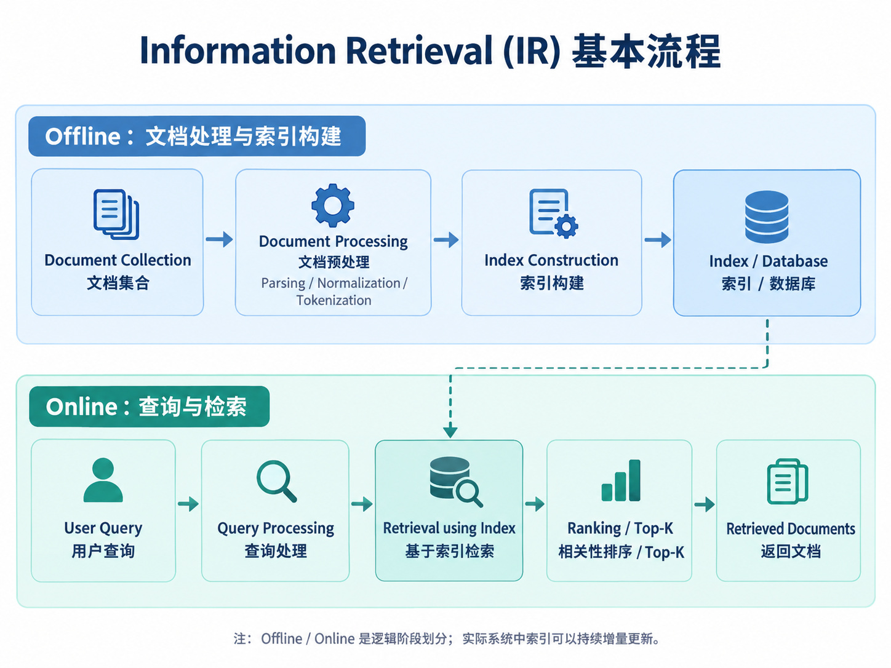

Information Retrieval（IR）总览
1. 什么是 Information Retrieval
Information Retrieval（信息检索，IR）的目标是：
根据用户的查询（Query），从一个文档集合（Document Collection）中高效找到与信息需求相关的文档，并按照相关性进行返回。
IR 不只发生在用户发起查询的时候。一个完整的 IR 系统通常包含两个逻辑阶段。

Offline：文档处理与索引构建
核心任务包括：
- 文档解析
- 编码与格式处理
- 文本规范化
- Tokenization
- 构建倒排索引或向量索引
- 保存检索所需统计信息
Online：查询与检索
核心任务包括：
- 查询预处理与 Tokenization
- 查询表示构建（关键词或向量）
- 基于索引检索候选文档
- 相关性评分与排序
- 结果过滤与 Top-K 选择
2. 传统 Information Retrieval 的核心内容
传统 IR 主要围绕词项、索引和统计相关性展开。
主要内容包括：
-
Document Processing
-
编码与格式解析
- Unicode / UTF-8
- Tokenization
- Text Normalization
- Stemming / Lemmatization
-
Document Classification
-
Boolean Retrieval
-
Term-Document Matrix
- AND / OR / NOT
-
二元匹配
-
Inverted Index
-
Dictionary
- Posting List
- Document Frequency
- Intersect Algorithm
-
Skip Pointers
-
Query Processing
-
Posting List 合并
- 按 DF 优化执行顺序
- Phrase Retrieval
-
Positional Index
-
Ranked Retrieval
-
Jaccard Similarity
- TF
- IDF
- TF-IDF
- Vector Space Model
- Cosine Similarity
- BM25
3. 现代向量检索
现代检索系统通常不再只依赖词项是否完全匹配，而是使用神经网络模型把文本映射为向量。
基本流程：
Documents
↓
Embedding Model
↓
Document Vectors
↓
Vector Index
查询时：
Query
↓
Embedding Model
↓
Query Vector
↓
ANN / Vector Search
↓
Candidates
↓
Reranker
↓
Top-K
现代系统中常见的组合方式是：
Keyword Retrieval
+
Vector Retrieval
↓
Fusion
↓
Reranker
↓
Final Ranking
这通常称为 Hybrid Retrieval。